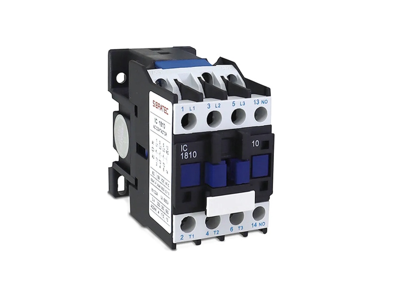
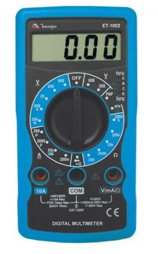

Conceitos e Aplicações
Disjuntor
O conceito fundamental de um disjuntor é ser um dispositivo magnetotérmico. Isso significa que ele opera baseado em dois princípios físicos distintos para proteger o circuito:
Proteção Térmica (Lâmina Bimetálica): Composta por dois metais que se expandem de forma diferente com o calor. Quando há uma sobrecarga (excesso de corrente por muito tempo), a lâmina entorta e "destrava" o mecanismo, desligando o circuito.
Proteção Magnética (Bobina/Solenoide): Em caso de curto-circuito, a corrente sobe tão rápido que cria um campo magnético forte o suficiente para puxar um gatilho instantaneamente.
Aplicações: Onde eles são essenciais?
Os disjuntores são aplicados em praticamente qualquer lugar que utilize energia elétrica, divididos por categorias de carga:
Residencial e Comercial (Baixa Tensão)
Circuitos de Iluminação: Disjuntores de baixa amperagem (geralmente 10A) para proteger as lâmpadas e fiação fina.
Tomadas de Uso Geral (TUGs): Proteção de eletrodomésticos comuns.
Cargas Pesadas (TUEs): Circuitos exclusivos para chuveiros, ar-condicionado e fornos elétricos, que exigem disjuntores de maior capacidade (20A a 50A).
Industrial
Motores Elétricos: Utilizam disjuntores motores, que são projetados para suportar o "pico" de energia necessário para dar a partida em um motor sem desarmar por erro.
Quadros de Comando: Proteção de máquinas complexas e linhas de montagem, onde a seletividade é crucial (um erro em uma máquina não pode derrubar a fábrica inteira).
Sistemas de Energia Renovável
Sistemas Fotovoltaicos: Disjuntores de Corrente Contínua (CC) específicos para painéis solares, que lidam com arcos elétricos mais difíceis de extinguir do que a corrente alternada comum.
Por que ele é insubstituível?
Sem o disjuntor, qualquer falha elétrica simples resultaria em um incêndio. Ele é a garantia de que a fiação de uma parede não vai virar uma resistência de chuveiro incandescente.
Características:
Reutilização
Velocidade
Conveniência

Relé Térmico
Dispositivo de proteção passiva baseado no princípio da dilatação térmica de materiais diferentes (bimetal). Três lâminas bimetálicas são enroladas por filamentos que conduzem a corrente de cada fase do motor. Se a corrente sobe, o calor gerado deforma essas lâminas. Essa deformação empurra uma barra mecânica interna que altera o estado de um contato auxiliar (geralmente abrindo o contato 95-96 do circuito de comando). Ele não corta a potência diretamente, ele desliga o contator que alimenta o motor.
Aplicações: Onde eles são essenciais?
Aplicações Domésticas:
Embutidos em equipamentos: Você não compra um relé térmico de trilho para casa, mas o conceito bimetálico dele está escondido dentro do motor do seu compressor de geladeira ou ar-condicionado (Protetor Térmico Clixon). Se a geladeira trabalhar muito em um dia quente e o motor superaquecer, esse protetor estala (abre) e desliga o motor, voltando a ligar sozinho quando esfriar.
Ferros de passar roupas e Grills: O termostato mecânico que liga e desliga a resistência usa exatamente o mesmo princípio bimetálico do relé térmico para controlar a temperatura.
Aplicações Industriais:
Proteção clássica de motores acionados por contatores: Montado diretamente acoplado na base inferior dos contatores de potência.
Sistemas com partidas pesadas e repetitivas: Permite ajustar se o rearme do sistema após uma falha será manual (exigindo que o eletricista aperte o botão físico no relé) ou automático (rearmando assim que as lâminas esfriarem).

Disjuntor Motor
Dispositivo de manobra e proteção ativa. Combina a alta velocidade do disparo magnético (que abre o circuito em microsegundos caso ocorra um curto-circuito) com a curva de atraso do disparo térmico bimetálico (que tolera a corrente alta de partida do motor, mas desarma se essa corrente persistir por muito tempo devido a um travamento mecânico). Possui botão de teste mecânico e dial para ajuste fino da corrente nominal do motor.
Aplicações Domésticas:
Sistemas de Bomba de Poço Artesiano: Protege a bomba contra queima caso ela puxe areia/sujeira e o rotor trave.
Sistemas de Climatização Central Residencial: Proteção dos compressores de grande porte.
Aplicações Industriais:
Proteção de Motores em Painéis de Comand: Substitui com vantagens a antiga combinação de "Disjuntor Comum + Relé Térmico + Fusível", economizando espaço drástico nos trilhos DIN dos painéis de automação.
Bloqueio de Segurança (Lockout/Tagout): A maioria dos disjuntores motor permite encaixar um cadeado físico na posição "Desligado", garantindo que nenhum outro funcionário ligue a máquina enquanto alguém faz manutenção no motor.

Múltimetro
Instrumento de medição eletroeletrônico. Mede tensão capturando a diferença de potencial em paralelo (alta impedância interna para não alterar o circuito); mede corrente em série (baixíssima resistência interna); e mede resistência aplicando uma corrente conhecida muito baixa sobre o componente e calculando a queda de tensão através da Lei de Ohm
Aplicações Domésticas:
Testar pilhas e baterias: Para ver se ainda têm carga (medindo a tensão em Corrente Contínua - VCC).
Identificar Tomadas: Descobrir se uma tomada é 110V ou 220V antes de ligar um aparelho sensível.
Achar fios partidos: Usar o teste de continuidade (o famoso "bipe") para ver se o cabo de um eletrodoméstico que parou de funcionar está quebrado por dentro.
Aplicações Industriais:
Medição de desequilíbrio de fases: Verificar se as três fases que alimentam um motor estão com tensões iguais.
Calibração de instrumentação (4 a 20 mA): Medir correntes de controle extremamente baixas que enviam dados de sensores para os computadores da fábrica.
Análise de harmônicas e True RMS: Multímetros industriais medem com precisão mesmo se a onda de energia estiver "suja" devido à interferência de inversores de frequência.

By Kristopher ™